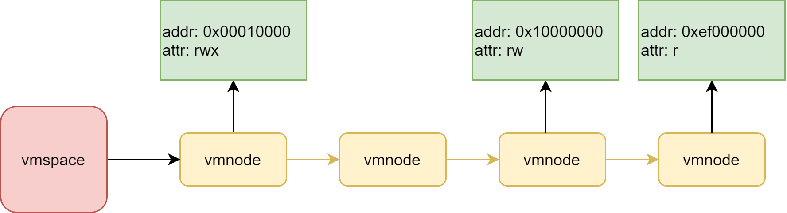

进程虚拟内存管理之虚拟空间
一、描述
进程在启动前，需要加载对应的代码、数据到内存中，然后才开始执行。 在进程的运行过程中也会涉及到堆的分配，栈的扩展等。 对进程的内存管理，是对它的虚拟地址进行管理。由于会有多个进程的存在，所以会对每个进程的虚拟地址 进行独立的管理，于是进程地址空间就出现了。
进程地址空间(vmspace)就是用来管理进程的虚拟地址的。由于不同地址会有不同的用途，于是会有虚拟地址节点(vmnode)来管理
不同用法的地址。
二、原理
进程地址空间的管理使用链表来维护每一个节点，节点是根据虚拟地址的值来进行线性排序，低地址在链表的开头，高地址在链表的结尾。 地址空间通过映射和解除映射来进行管理，类似于分配和释放的操作。
映射某段空间的时候，会先检测地址是否被使用，如果已经被使用了，就不能直接使用这块地址。没有被使用，就可以在地址空间中添加一个
vmnode，节点记录了地址的信息以及这段地址的属性。
值得注意的是，映射的时候，还会去对内存进行物理内存映射，只有映射后，进程才能访问该地址。
解除映射的时候，会先判断该地址是否映射，已经映射才能解除。会先解除物理内存映射，然后再把 vmnode 删除。
三、框架图

四、接口
虚拟地址在映射的时候，需要指定对应的地址空间，然后就是传入一个想要映射的地址，如果为0，那么就会自动分配一个地址。 以及这个地址对应的内存大小，内存节点的属性，已经一些扩展的标志。
在解析 elf 格式的可执行程序的时候，需要映射一段内存来储存代码和数据，就会用到映射功能。
以及在做进程的堆分配和栈扩展的时候，都会使用到。
NX_Error NX_VmspaceMap(NX_Vmspace *space,
NX_Addr addr,
NX_Size size,
NX_U32 attr,
NX_U32 flags,
void **outAddr);
/* 指定了虚拟地址需要映射到的物理地址，映射的时候，就把虚拟地址映射到该物理地址（未来做共享内存的时候会用到） */
NX_Error NX_VmspaceMapWithPhy(NX_Vmspace *space,
NX_Addr vaddr,
NX_Addr paddr,
NX_Size size,
NX_U32 attr,
NX_U32 flags,
void **outAddr);
解除地址映射的时候，需要制定虚拟地址和内存大小，如果在已经映射的内存空间中匹配到vmnode，就可以将其解除映射，并释放其
映射的物理内存。
NX_Error NX_VmspaceUnmap(NX_Vmspace *space, NX_Addr addr, NX_Size size);